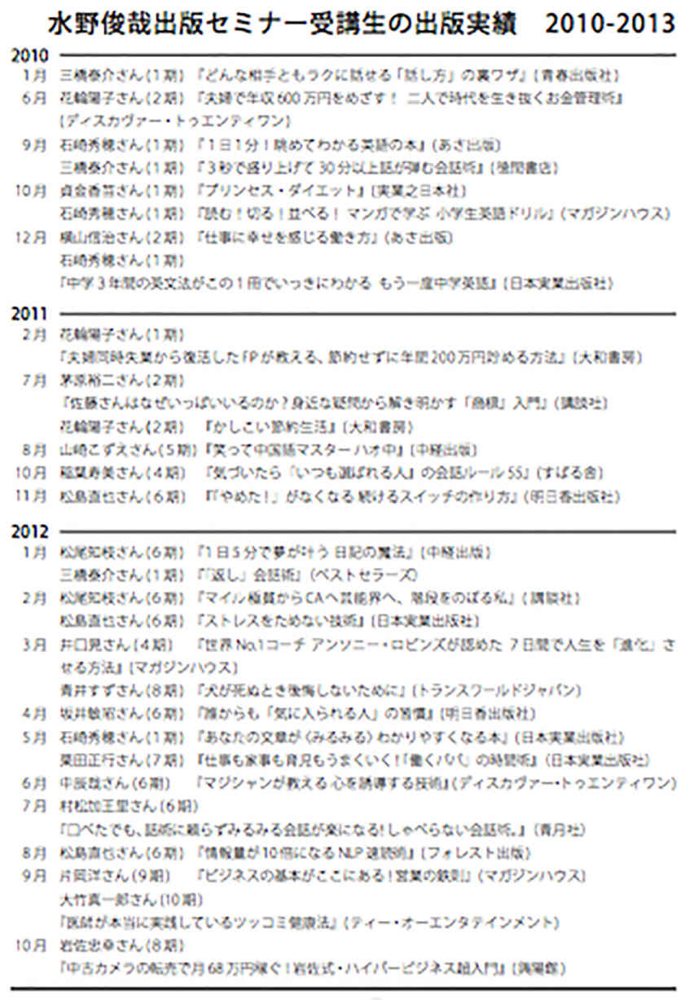

| 最高の結果を出す！ 究極の読書術 新「ビジネス書」のトリセツ（特別公開版） | |
| 水野俊哉 | |
| Cassiopeia Publication (2017) | |
最高の結果を出す！ 究極の読書術 新「ビジネス書」のトリセツ（特別公開版）
水野俊哉
水野俊哉出版セミナー 受講者アンケートより感想の声
・出版については全くの素人だったのですが、業界の流れなどがわかって、勝手に１歩前進できた気分です。出版熱が盛り上がってきたので、まずは〝トリセツ〟を熟読して、今もっている企画をブラッシュアップさせます。
Ｍ．Ｎ 三十代女性
・今日はどうもありがとうございました。ユーモアを交えた貴重なお話、大変参考になりました。会場が一体となっていた気がします。
Ｓ．Ａ 二十代女性
・売れる本のフレームワークがわかって良かった。
Ｓ．Ｙ 三十代男性
・とても参考になりました。具体的なお話もお聞きしたいので、少人数セミナーを受講したいです。
Ｕ．Ｋ 四十代男性
・初めて参加させていただきましたが、聞いていてとてもワクワクしました。初心者でも理解しやすく、納得できるので、とても勉強になりました。
Ｏ．Ｍ 二十代男性
・売れる本のパターンなど、体系的で、非常に参考になりました。自分の考えを昇華させるのにも、役に立ちました。改めて、アヤフヤ・アイマイだった出版のゴールセッティングを考える予定です。
Ｍ．Ｔ 三十代男性
・本の書き方の理論がよく分かる内容でした。本を読むだけでなく、このようなセミナーに参加することが大切だと思いました。ありがとうございました。
Ｍ．Ｍ 四十代男性
・とてもおもしろく、ためになりました。もっと早く聞けばよかったと思いました。
Ｙ．Ｈ 四十代男性
・具体的な内容で、たいへんタメになりました。ありがとうございました。
Ｙ．Ｍ 三十代男性
・出版するまでのプロセスもビジネス戦略と全く同じだとわかりました。非常にロジカルでわかりやすいお話でした。ありがとうございました。
Ｔ．Ｈ 四十代男性
・来て良かったです。今回が二回目の理論編参加です。本当に参加して良かった! と思っています。一回目では理解が及ばなかったこと、先生がいわんとしている本質的なことが、二回目でやっとストンと中に入ってきたのです。複数回受講してより自分の力に変えられたと思います。先生の教えは大変わかりやすく、感謝しております。
Ｙ．Ａ 四十代女性
・以前、同じ内容のセミナーを受講したのですが、新しい発見、学び、もありました。
Ｓ．Ｓ 六十代男性
・分析を重ねた上でのオリジナリティーが、とでも興味深いです。限られた時間の中、とても分かり易くまとめてくださり、どうもありがとうございます。
Ａ．Ｍ 三十代女性
・大変楽しいお話でした。具体的な本の企画をすぐにでも考えたくなりました。夢への実現へ一歩前に出ることができそうです。モチベーションが上がりました。
Ｉ．Ｍ 二十代男性
・久しぶりに改めてお話をうかがって、自分にたりていないところがよくわかりました。
Ｋ．Ｈ 四十代女性
・参加する前は、硬い内容だと思っていましたが、参加してみて色々な身近である事例を説明して頂き勉強になりました。
Ｔ．Ｋ 五十代男性
・学び直す良い機会になりました。初心を忘れず精進します。ありがとうございました。
Ｓ．Ｋ 三十代男性
・「本を書きたい」という思いと、「こういうことを書きたい」という〝なんとなく〟の考えはあったけれど、水野さんのセミナーを受けてみて今はまだ、それがいかに漠然としていて、説得力に欠けるものかよくわかった。自分の「思い」や「考え」をもっと客観的に棚卸しして、現実的に自分の方向性をハッキリさせて、本を出したいと思います。すごく参考になりました。ありがとうございました！
Ｓ．Ｈ 三十代女性
・プロモーションのお話など、とても参考になりました。ありがとうございました。
Ｏ．Ｈ 三十代女性
・事前に本は拝読していましたが、生で聴くとよく理解できました。
Ｉ．Ａ 四十代男性
・すごく面白くて笑ってしまいました。こんな楽しいセミナー初めてです。
Ｈ．Ｙ 三十代女性
・『「ビジネス書」のトリセツ』を読みたくなった。
Ｋ．Ｙ 二十代男性
・何回目かの参加になりますが、改めて、気付きがありました。
Ｓ．Ｓ 三十代男性
・今日はたいへん勉強になりました。本を読むことが嫌いですぐに眠くなってしまいますが、そんな本を書くということは、今日教わったように自分が楽しく書くことだと思いました。本日はありがとうございました。
Ｋ．Ｋ 二十代男性
はじめに
「読書」という行為には人生を変える力がある。
僕は、自分自身が読書１つでどん底の淵から再生した経験があるので、断言できる。
ただ問題は、どう読むかであり、それ以前に何を読むか、読書で得た知識をどう活用するか、というところまで踏み込む必要があるだろう。
今、僕の書斎には７つの本棚があり、さらに廊下には、ガイドブック、受講生の本を入れる本棚と、恋愛本、脳科学、マネー、勉強本などジャンル別に棚が並んでいる。
それらの本棚は、まさに僕自身の記憶の迷宮であり、背表紙を眺めているだけで軽く１時間は知的な世界へと浮遊することが可能である。
さらに寝室には大量のマンガ本、文庫本、お気に入りのルポの類が整理された本棚があり、枕元には僕を夢の世界に誘う娯楽本が物語の続きを読まれるのを待っており、ベッド脇にもそうした本が数十冊積み重ねられている。
１Ｆのリビングには、ミシュランなどの飲食店のガイドブック、旅やドライブに関する書物。仕事の資料を保管するためのレンタルボックスまで借りている。恐らく僕は残りの人生を蔵書を読むことだけに費やすことも可能であろう。
いわば、僕が前半生で積み重ねてきた知識の習得や脳内浮遊の旅の残骸が、掘り起こされるのを待つ地層のように僕の周りを取り囲んでいる。
僕自身が著者としてコンサルタントとして、時々は経営者として活動していくベースは、すべて読書と自分の人生経験によって培われたものである。
この読書と自分自身の人生経験は、車でいうとガソリンとエンジンのような関係にあり、記憶がドライブレコーダーだ。
本を読んで行動することにより、自分自身の経験が深みを帯びていく。あなたがどこへドライブするのも自由だが、快適で安全でありながら時に自分自身の好奇心を満たしてくれるような旅をするのに、読書は欠かせない。
本書では２００９年に発売された『「ビジネス書」のトリセツ』(徳間書店)を底本にしながら、新たに「本を読んで書く方法」について、あれこれと綴ってみた。
前作で好評を得た「隠れたサインを見抜く「裏読み」術」やベストセラー・ビジネス書「書き方」の法則は４章に収録している。物議をかもしたビジネス書10
大著者の「ここが読み所」は、特典サイトhttp://www.pubca.net/cam/new-business/present/
からＤＬできるようにした。
ビジネス書は面白くて儲かる最高の勉強ツールである
僕は比較的、若い時期に独立して始めた事業がすぐに軌道に乗り、年商数千万円をコンスタントに稼ぎ出すまでになったのだが、安定路線を捨て、事業を急拡大したことから歯車が狂いだし、気がつけば年商も数億円規模になったものの、負債も３億円を超える債務超過状態に陥ってしまったのである。当時の僕は事業欲に取り付かれたような人間だった。
「あと５億あれば、この事業はブランディングする」
解任直前まで、プラン通りにことが進めば年商も経常利益も倍々ゲームで増える事業計画書を抱え、ベンチャーキャピタルや投資家たちのもとを訪れていた。しかし、神風は吹かず、ある日、解任され、路頭に迷ったのだった。
毎晩、銀座や六本木で飲み歩いていた人間が職を失い、同時に僕の周囲の人間は、部下も僕のお財布が目当てだったらしい女たちまでもが、サーッと音を立てるように消えていった......。
金も名誉もすべて失い、しばらく僕は生きる希望すら失い、景色が灰色に見える世界を生きていたのだが、やがて経営コンサルタントを経て、２００８年１月に『成功本50
冊「勝ち抜け」案内』(光文社)でデビューした後は、執筆の依頼が絶えることもなく、２０１０年いっぱいまでの予定がほぼ埋まっているほどである。
恐らくこのまま頑張って書いていれば、かつての収入を軽く超える日も来ると自分では予測しているが、ドン底からの復活のきっかけはビジネス書の多読だったのだ。
と書いたのは前作を書いた２００９年のことだった。
詳しい経緯は本書に記すが、僕は前作を出してからもビジネス書を読み続け、出版という形でアウトプットを重ね、お陰様で本書が19
冊目の書籍になる(１冊は電子書籍)。
また、前作の内容ほぼそのままの「ベストセラービジネス書がすらすら書けるセミナー」(理論編)の受講生は６００名を超えた。なかには本書をお読みの方にも受講者がいるかもしれない。
理論上は完璧に思えたものの「実際に出版できるのか？」を実験するために開催した「水野俊哉 出版セミナー実践編」は、第１期生の半数以上が出版決定し、これまで２００名以上が卒業し、２０１７年７月時点では31
期、32
期生を募集するにいたっている。(巻末に実績一覧掲載)
僕は前作を出してから７年間で自分の出版社を持つに到り、もはや、収入やステータスに振り回されることなく、満ち足りた心で毎日を過ごしている。たまに悪夢にうなされて深夜に目覚めることもあるが、それは必ず、３億円の負債を抱えて彷徨っていた地獄の日々が再来してしまった夢を見てしまったときだ。
かつてのように連日連夜、銀座や六本木でモデルやコンパニオンのお姉さんを連れ回して飲み歩こうとも思わない。
なぜならビジネス書を読んだり、自分の本を書いたり、セミナーで受講生たちに自分の知っている限りのことを話したりしているほうが、はるかにハッピーで充実しているからだ。
僕は全国各地の美味しいものを食べ歩くのが好きだし、今でもお酒だって嗜む。
だが、ビールを飲みながらも、その傍らにはかなりの確率で本がある。おそらく、この本の別のところでも書くだろうが、僕は本と四六時中デートしているような日々を過ごしている。
もしも、あなたの手元に３億円の現金があったらどうするだろうか？
南の島で毎日、ビーチカクテルでも飲みながらのんびり過ごしてもいいし、毎日、友だちと飲み歩いてもいいし、ガールハントにいそしんでもいいだろう。しかし、そんな生活は長くは続かない。せいぜい３カ月、１年も持てばたいしたものだろう。
なぜなら、人間は充実感がないと生きていけないからである。結局、自分がそれをやって楽しいと思う仕事なり活動なりをして、人を喜ばせ、誰かに貢献し、そのことによって充実感を得ることが自己実現につながるのではないか。
逆に今の生活が苦しくてたまらないケースもあるだろう。たんにお金がないとか、やりたい仕事につけていない、今の仕事で充実感を感じられない。将来に漠然とした不安がある、危機感を感じている。世の中に認められない。女にモテない。婚活がうまくいかないなどなど。
実際には手元に３億円あるよりも、ずっとずっと現実に近いと思われるシチュエーションである。そんな時、あなたはどうするのだろうか？やけになって遊びまわるだろうか。友人と愚痴をこぼすだろうか。インターネットの掲示板に世の中の不満を書き連ねるだろうか。あるいは小説でも読んで癒しを求めるだろうか。
そんな時、ビジネス書を読んでみてほしい、と僕は言いたいのだ。
なぜなら、ビジネス書には仕事や人生のあらゆるシチュエーションで役に立つ知識が書いてあるし、ビジネス書で身につけた知識を正しく仕事や人生において実践することで、生きるスキルがアップする。
それどころか、後で紹介するが、人生の目的を見つける方法が書いてあるビジネス書や人生の目的を実現するための方法が書かれたビジネス書、人付き合いのなんたるかを書いたものや、仕事の効率をアップするための本、会計や法律や投資の知識が学べる本、イラッとした時に感情をコントロールする方法から働く気力が起きない人にやる気を出させる本、朝起きられない人のために早起きする方法を書いた本まである。
なんたる親切ぶりであろうか。親や学校の先生ですらここまで懇切丁寧には教えてくれないだろう、と思われるほどだ。
実際に僕自身、あるきっかけでビジネス書を多読する習慣ができてからは、人間関係・時間・お金・健康をきちんと管理できるようになり、あれほど自堕落で放埓な生活を送っていたのが嘘のように、早朝から仕事をし、ムダ遣いもしなくなり、適度な運動を欠かさず、人間関係も劇的に良くなった。
さらにはアウトプットの能力も高まったのか、大量に本を読んではそれをまとめて本を出版し、その結果、書物やセミナーでビジネス書から知識を学ぶ方法、つまり勉強法を伝えるまでになっているのだ。
誰も書かなかった「ベストセラー・ビジネス書の秘密」
僕が年間で読む書籍は、のべ１０００冊を超えている。その読書量と、本の中からエッセンスを抜き出す力が認められ、「ＤＩＭＥ」(小学館）で書評を担当し（２０１５年時点）、さらに過去には「週刊ＳＰＡ！」や日経ＢＰネットでも連載をさせていただいた。
よく、「なぜそれだけの本を読めるのですか？」と訊かれることが多いのだが、本書では、僕なりの読書の流儀について、詳しく解説してある。
まずは、最新のビジネス書の表から裏までを解説し、シチュエーション別にどのように本を読むことができるのかという一風変わったテクニックから、ビジネス書の効果的な読み方、活用法、時間の取り方、読書に便利なグッズ、前作で好評だったベストセラー・ビジネス書の「書き方」まで紹介している。
いわばビジネス書を読んで、身につけた知識を栄養にして仕事や人生のスキルを磨いてもらい、 ビジネススキルのマッチョマンになる方法が、この一冊に凝縮されている。
前作では、ビジネス書を読んで仕事に活かす、書評ブログを書く、勉強会を主催する、出版する ......など、インプットした知識をどうアウトプットするかを書いた。
今回は、「本を読んで、書いて、しゃべって、教える」ことをサイクルにして、あなたの知的生産力、「知識を換金する力」を養うヒントになればと思いながら書いている。
ぜひ本書を読んで、本と一緒に旅に出てほしい！
２０１７年７月 水野俊哉
第１章 ビジネス書のフロントライン
ビジネス書シーンの７大トピック
文化人のテレビ出演について、そのメリットとデメリット
「今でしょ」
の決め台詞が流行語になった林修さんや脳科学者の中野信子さんを始め、バラエティー番組や情報番組への文化人出演が増えている。ここ数年の傾向としては、「ホンマでっか⁉
︎ＴＶ」(フジテレビ系列)「ワイド！スクランブル」(テレビ朝日系列)など彼らを積極的に登用する番組が目につく状況だ。
「タレントの場合、番組での扱いや発言の内容など事務所からの縛りもきついが、文化人枠の場合、面白い発言がなければオンエアしなくてもいいなど、使い勝手がいいのも事実」と語るのは、「駆け込みドクター！運命を変える健康診断」(ＴＢＳ系列)にレギュラー出演している大竹真一郎さんだ。
「ワイド！スクランブル」のゲストコメンテーターなどもつとめる松尾知枝さんはもともとタレントだが、ファイナンシャルプランナーとしてテレビや雑誌で活躍している花輪陽子さん、婚活塾が好評の澤口珠子さんなど、最近は本を出してテレビ初出演というケースが以前より増えている。
実はテレビ局も以前と違って予算が減っているので、ギャラが安い「文化人枠」で著者や大学教授などの「専門家」を起用したがっている。
テレビに出るには若くしてアイドルになるか、歌手や俳優としてのキャリアを積むか、お笑い芸人になるか、あるいはスポーツ選手や経営者として一流の実績を出す......などがこれまでのコースであったが、著者になって知識人枠でタレントデビューするというコースが新設されたようなものだ。
つい先日まで一般人として暮らしていた人が本を出して１年もしないうちにテレビに出て有名になるというケースが、僕の周りだけでもそれなりに出ているのだ。
よって、第５章で解説するパターン１のように本を出して雑誌の取材を受けテレビ出演して有名になる、などの目標を持っている人にとっては願ってもない状況だと言えるだろう。
僕のところにも何度かテレビ出演の依頼が来ており、「スタジオで30
分間ビジネス用語の解説をしてくれ」、というものや、なかには「恋愛についてのコメントをしてほしい」、というものまであった。
ただし、僕の場合は、今のところ「半日拘束されてギャラが数万円なら費用対効果を考えると他の活動をしていた方がいい」という考えだが、普通はやはりテレビに出ると様々な機会が増えるのでチャンスではある。
突然、声がかかってもいいように「準備」はしておいた方がいい。
たとえばセミナーや講演など人前で話す機会を多く作ったり、より具体的なことを言えば、セミナーや講演会を動画撮影して配信したり、自分が話す姿をチェックするのだ。スピーチのトレーニングを受けてみるのもいいだろう。
作られたベストセラー ネット起業家の出版・情報商材と本
ネット起業家の本と言えば、かつては川島和正氏の『働かないで年収５１６０万円稼ぐ方法』(王様文庫)や、菅野一勢氏の『時給８００円のフリーターが２０７日で１億２０４７万円稼いだいちばん簡単な方法』(イースト・プレス)が知られるくらいで、一般的な知名度は低めであった。
ところが、２０１２年９月に与沢翼と小玉歩が、それぞれ『スーパーフリーエージェントスタイル』、『クビでも年収１億円』を同時に発売(ともに角川フォレスト)し、ベストセラーになった。
また与沢翼は続いて『秒速で１億円稼ぐ条件』(フォレスト出版)を発売。タイトルのインパクトもあり話題になった。小玉歩は『３年で７億稼いだ僕がメールを返信しない理由』(幻冬舎)、『仮面社畜のススメ』(李白社)などを発売している。
それぞれセールスは好調とされていた。また与沢翼は当時の彼女、山田るり子とともにメディア出演などを繰り返し「ネオヒルズ族」という言葉が一時ブームになりかけたほどだ。
この成功(？)に目をつけたのか、２０１３年から２０１４年にかけては有名ネット起業家の本が続々と発売された。
中には１冊にあたり５０００万円ほどのプロモーション費用をかけたケースもあるという。
電車の社内広告枠をジャック、駅構内にポスターを貼り、大型書店のランキング操作などをし、自社メディア(主にメルマガやフェイスブックなど)で、その模様をリアルタイムで告知することで、ベストセラーを自作自演するのだ。
いわばベストセラーを金で買った形
だが、採算は合うのだろうか。
印税は定価の10
％
程度なので、定価で本を買いまくっても採算が合うはずもない。
実はこうしたネット起業家の本はオンライン塾やセミナーを販売するための宣伝ツールになっているケースが多い。詳しくは拙著『マネー＆
フリー 僕らが楽して大儲けした57
の秘訣』(カシオペア出版)でも書いたが、彼らネット起業家が販売する情報商材やオンライン塾は定価が数万円から数十万円もする。
またそれだけの高額な商品を売り切るには「ベストセラー本の著者」「テレビにも取材される有名人」というセルフブランディングが必要であったと言われている。
本が10
万部売り上げても印税は１５００万円程度だが、30
万円のオンライン塾を１０００人に売ると３億円になる。
無理矢理に作られたベストセラーというのは読者もそのうち気づくので、そういった本のアマゾンレビューは罵詈雑言が飛び交う大変な状態になっていることが多い。
出版セミナー・出版コンサルタントについて
２００９年に『「ビジネス書」のトリセツ』を書いた頃は、今と違って出版セミナーや出版コンサルティングを提供している業者はごくわずかだった。
なにしろ、つい先日も朝日新聞で林真理子さんが、自費出版業界を舞台にした小説を連載していたくらいで、「本は作家や有名人が書くものであり一般人が商業出版するのは不可能に近い」というのが業界の常識だったのだ。
「水野俊哉出版セミナー」は２００９年８月に第１期がスタートし、現在31
期と32
期が７月からスタートしている。
http://www.pubca.net/mt_jissen/
過去累計で２００人以上が受講し、出版決定率は５０％
以上をキープしてきた。
受講生の中にはひとりで５冊、10
冊と出版する人も出てきたので、僕が始めたセミナーがきっかけになり生まれた本は１５０冊以上になる。累計部数もおそらく１００万部を突破しただろう。
１冊も本を出したこなかった人たちを集めて指導して、著者デビューさせ続けてきたのだ(詳細は巻末)。
出版セミナーを始めた動機は、自分の本で書いた出版理論が正しいことを証明したかったからでもあり、だからこそ、当時は相場よりも安い授業料でやっていた。
また、垣根の高かった出版というもののハードルを、夢物語から適正な努力をすれば五分五分の確率で出版できるかも、というところまではやったという、ささやかな自負もある。
当初は著者を探している編集者と、著者になりたい人たちと、それをマッチングする人間のトライアングルに、プラスがあった。
それがやがて出版セミナーも、雨後の筍のように乱立するようになり、毎年かなりの数の出版セミナーが生まれてはひっそり消えていっている。
さらにいえば最近は電子書籍という出口もあり、誰でも出版セミナーを開催できるようになってきている。
ここまでくると間口が広がったのはいいが、どれを選べばいいかわからないという状況になっている。
たとえば、有名著者が大々的にプロモーションをしかけて生徒を集めてみたものの、セミナー自体がなくなっているようなケースもある。
ダイヤモンド社やサンマーク出版、フォレスト出版なども自前で出版セミナーを開催するにいたっているが、こちらは何でもかんでも出版するとブランド力が落ちるうえに、売れない本を出すと赤字になるので、著者志望者には相当に要求のハードルが高いことが予想される。
僕が長年観察してきて言えるのは、最低でも、「継続的に開催されている」ことと「実績がきちんと確認できる」ことに注意するといい、ということだろう。
まあ僕の場合は、出版セミナーを開催しているうちに自分の手がけた本がそこそこ売れるケースが多いために、「だったら自分で出版社を始めよう」と思うに至った、という展開になってはいるが。
これからも相変わらず細々と小人数で続けて行くつもりではあるが、最近は自分の出版社の立ち上げで忙しいこともあり、はたしてどこまで続けられるか......。
ビジネス書の全体の流れ
先日、宝島社のムックで「ビジネス書の流れ」について取材を受けたのだが、最近の傾向として「ビジネス書はどんどん読みやすくなっている」ということが言えるだろう。
たとえば『マンガでわかる ７つの習慣』(宝島社)が大ヒットして、今は「マンガでわかる」をうたったシリーズが続々と刊行されている。
極端に言ってしまえば、もはやビジネス書をマンガで読むのが当たり前といった状況になりつつある。
かつてはビジネス書というのは丸の内に勤務するエリートビジネスパーソンが読むものという印象があったかもしれない。しかし、マンガ本のヒットで、これまでビジネス書をあまり読まなかった女性や中学生くらいにまで裾野が広がっている気がする。
そのうち「ビジネス書ガール」というのが現れて、彼女たちと話を合わせるためにビジネス書を読むなんて男性たちも出てくるかもしれない。
さて、ビジネス書はいつから読みやすくなったのか？
この流れは「もしドラ」こと、『もし高校野球の女子マネージャーがドラッカーの「マネジメント」を読んだら』(ダイヤモンド社)が決定的だったと思う。それ以前にも『ユダヤ人大富豪の教え』(大和書房)や『夢をかなえるゾウ』(飛鳥新社)など、ストーリー形式で売れたビジネス書がなかったわけではない。
しかし、「もしドラ」がベストセラーになった後は、各社こぞってラノベ風の表紙のビジネス小説を出版し、「もしドラ」現象的な様相を呈していたのだが、「もしドラ」以外であまり売れたケースはないようである。
当然、各社「次は一体どうしたらいいのか？」を考えたろうし、行き着いた答えが「名著をマンガで読ませる」だったわけだ。
僕はこの流れを好意的に受け止めている。もともと、ビジネス書でもほかの本でも、書かれている内容を１００パーセント理解したり自分のものにするのは困難である。ならばそのエッセンスを抽出した形になっていてよりリーダブルな、マンガ形式のものでもいいではないか、と思うのだ。よく似たケースとして、ビジネス書ではないが、かつては硬派な読み物だったルポをマンガにしたミリオン出版の雑誌『漫画ナックルズ』シリーズも挙げられる。
『体脂肪計タニタの社員食堂 〜５００ｋｃａｌのまんぷく定食〜』のヒットを受けてだろうが、ビジネス書のフォーマットに則った健康本、ダイエット本が増えている。
『おやじダイエット部の奇跡「糖質制限」で平均22
キロ減を叩き出した中年男たちの物語』、『一流の人はなぜそこまで、コンディションにこだわるのか？ 仕事力を常に１２０％
引き出すカラダ習慣』、『なぜ一流の男の腹は出ていないのか？』......など。
こんまりさんの『人生がときめく片付けの魔法』もビジネス書のフォーマットに則った「お片付け本」と言えなくもなく、「ファッション」「グルメ」など従来はビジネス書コーナーに置かれなかったテーマのビジネス書が増え続けているのが最近の傾向だ。
ビジネス書の新しい流れ
ゴーストライター／ブックライター
２０１４年、作曲家の新垣隆が現代のベートーベンと言われた佐村河内守氏のゴーストライターであったと告白し、大騒動となった。新垣氏に取材した神山典士は「全聾の作曲家はペテン師だった！ ゴーストライター懺悔実名告白」を発表し、第45
回大宅壮一ノンフィクション賞(雑誌部門)を受賞した。
同時期にはテレビドラマ「ゴーストライター」も放送されている。
このドラマは売れっ子女性作家(中谷美紀)が書けなくなって、アシスタント(水川あさみ)がゴーストライターになったのだが、そのアシスタントがゴーストだったことをバラして、大騒動になるという設定だった。
音楽とか純文学の世界ではゴースト問題はタブーだしファンも読者も厳しく目を光らせている。数年前には某社の文学賞を某俳優が受賞したことで、これも「出来レースだったのでは？」と大騒ぎしていた。
以前も何度か書いたが、ビジネス書の著者にゴーストライターがいるのは、これは「アイドルは恋愛しない」というのが事実ではないのと同じくらい公然の秘密である。
むしろ自分で書いている著者の方がごく一部と言ってもいいくらいで、ゴーストライターと呼ばず、ブックライターという専業のライターがいるくらいである。このあたりの事情は、上坂徹氏の『職業、ブックライター。』(講談社)が詳しい。
上坂氏は、
「お手伝いした本は、『執筆協力』『構成』『編集協力』などの形で、本のどこかで名前を出してもらっていることがほとんどです」
「『いい本ができた』とお褒めをいただけることも少なくありません。そしてヒットすれば私自身の収入が増えていくことも含めて(印税収入ですから売れれば売れるほど私の収入も増えるのです)、大変な手ごたえを得ることができる仕事でもあります」
と書いている。
同書には気になる著者とブックライターの印税の配分率や資料集めから取材方法、執筆の方法などかなり具体的なことが描かれている。
ちなみに、上阪徹氏は、ゴーストした本が５万部以上ヒットした本が10
冊以上あり、「同年代の一般的な会社員の何倍もの収入を、フリーランスになって20
年近くにわたって稼ぐことができています」というのだがら、今後、作家よりむしろゴーストやブックライターになりたい、なんて若者がでてきたら面白いと思う。
僕は19
冊目となる本書を含め、すべて自分で書いているし、自分のセミナーの受講生には極力自分で書くことを勧めている。
しかし、もともと多忙を極める経営者やビジネスマンが出版することが多いビジネス書においては、その昔からライターや編集者が企画構成して本人にインタビューして聞き書きするスタイルが一般的なのである。
読者としても素人が書きなぐったような本よりは、プロが整えた読みやすい文章の方がいいのではないか。
本当の美人著者が増えた
かつての「美人著者」というのは、極端に言ってしまうと「美人政治家」というレベルだった。政治家というのはふつう男性、しかも60
代以上ばかりなので、女性というだけで「美人政治家」と言われるくらいのレベルだった。昨今は本当の美人政治家をさして「美人過ぎる政治家」という言い方もある。
ビジネス書業界も同様で、かつての「美人著者」はそれこそオジサンばかりの著者が並んでいるなかで目立っていただけ、と言えなくもない。勝間和代さんも『結局、女はキレイが勝ち』(マガジンハウス)という本を出されていた。
今ではビジネス書コーナーで、ワタナベ薫さん『美人になる方法』(主婦と生活社)や長谷川朋美さん『好きなことでお金を稼ぐ方法』(大和書房)、神崎恵さん『いるだけでどうしようもなく心を奪う女になる』(大和書房)など、著者自身が積極的に表紙などに露出し、それが本の説得力を増すこと、ひいては売上に寄与しているケースが非常に増えた。
たとえばミリオンセラーとなった『人生がときめく片づけの魔法』(サンマーク出版)も、著者のこんまり先生こと近藤麻理恵さんが小動物系の愛らしいルックスだったのと無縁ではないだろう。
実は旧版で、元祖美人過ぎる著者である小室淑恵さんの登場に際して僕はこう書いていた。
「近年のビジネス書女性著者のビジュアル化路線はますます加速し、今や表紙に写真を載せていない人のほうが珍しい気がする。しかし、僕はこの傾向には危惧を覚えている。
小室さんほどの美貌に実力が伴った方であれば、ビジュアル化路線も大いに結構であるが、実力派が無理やりビジュアル路線を目指しても痛々しいものがあるし、逆に実力が伴わないビジュアル路線も一発屋で終わる危険性が高い。タレント的展開がご希望であれば、てっとり早い手法かもしれないが、お笑い芸人もそうだが、ビジネス書の著者はネタで勝負するもので、『ビジュアルがウリ＝実力がない』という意味だったはずだ。
安易なビジュアル重視路線が極まれば、アイドルにおけるＳＭＡＰのようにルックスも良くお笑いも歌もできるというタレントに淘汰されかねない。
つまり、美人すぎるビジネス書著者にゴーストライターを立ててタレント著者としてプロデュースするうちに本人の実力も伸びてきて、なんてことになっては実力派としては死活問題である」
結果的には才色兼備型著者が増えたということなのだが、個人的には本当にきれいな美人著者が増えるのは、大歓迎である。
カツマーはどこに消えた
２０１０年から２０１５年にかけてビジネス書をとりまく状況も大きく変わってきている。本書の旧版発売当時は勝間和代バブルという状況で、フォトリーディング、マインドマップ、自転車通勤など勝間和代氏の提唱するメソッドがビジネス雑誌でも特集され、「カツマー」と呼ばれるファン(信者？)が大量発生していた。
２００９年に勝間和代氏が『結局、女はキレイが勝ち』をマガジンハウスから出した頃を思うと隔世の感がある。勝間和代のことが嫌いなのか、など何度も尋ねられたが、嫌いも好きもあるわけがない。「物事を冷静に考えよ」と言いたかっただけである。
光があれば影があるのはこの世の常だ。数々のトラブル的言動についてあげつらねることはしないが、震災直後の原発擁護的発言には僕も驚いた一人だ。
ニュース報道によると、事故発生後、「放射性物質が実際よりかなり怖いと思われていることに問題があるのではないか」などと発言していた。
しかしブログで、自身の発言について、科学的根拠を強調したあまり、多くの人々が感じている将来への不安に対する配慮を欠いていたと謝罪。「軽水炉の新規建設の永久凍結」を提言し、その代わりとして新しい技術を使った原子炉を「安全性を充分に検証した上で導入する」としている。
(Ｊ－
ｃａｓｔニュース４月19
日配信号より)
マネー・ヘッタ・チャンの『ヘッテルとフエーテル』(経済界)の第２話「カネヘルンの笛吹き」にカネへルン・ミセス・インディなる女性著者が登場する。
ヘッテルは、カネヘルン・ミセス・インディという「女手ひとりで子供を育てながら、転職＆
キャリアアップで年収は10
倍、給料を何千万円ももらい、何冊も本を書く肉食獣のような生活をしている女性」が書いた本と出会う。
ミセス・インディに影響されたヘッテルは、「会社に人生を預けてたまるか」と、断る力を発揮して嫌なことはすべて断り、「入ってきた給料は、証券会社で投資信託、とくにアクティブファンドと呼ばれる積極的運用ファンド」で運用。「インディーズ」と呼ばれるファンクラブにも入り、楽しい日々を生きていた。
ところが、１年ほど経った頃、「会社で断ってばかりいたのでリストラ対象にあがって解雇」「土日に無理なく勉強しても、全然効果が出ず試験は不合格」「世界恐慌が発生、投資信託はあっという間に半値に」など、散々な目にあってしまう。
物語の最後、グリーム婆さんの解説文より。
「だれも疑問に思っていないのが不思議なんじゃが、本当に優秀でチャンスをつかむ人は何回も転職しない(優秀な人は高給で引き止められる、なぜ外資を転々とするんじゃ？)。
史上最強の人生戦略マニュアルを持っている人は、何回も離婚しないもんじゃ。
投資で成功できるなら何冊も本を出さないし、やたら講演やらボランティアで世界中を回らない」
と締めくくられている。
ちなみに勝間氏ご本人は２０１５年プロ雀士となったことを発表した。
世の中の狂騒の中で、何を言ってもかき消されてしまうタイミングがある。僕はビジネス書(だけでないが)を読むのは、洗脳されるためではなく自分の頭で物事を考えられるようになるためだと思う。
あるジャンルの中で自分なりの判断基準を確立するのは、ある程度の知識をインプットして自分の頭の中でマッピングする必要があるだろう。
ガルブレイスの『バブルの歴史』やショーペンハウエルの『読書について』などを読んでみてほしい。
第６章 ビジネス書の資料室
成功を導く珠玉のビジネス書
厳選90 冊からマトリックスまで一挙公開！
この章では、ビジネス書の最新テーマから、勉強や仕事の効率を上げ、成功を成し遂げ、幸福な人生を送るために読むべき書籍まで、９つのジャンルやＴＰＯごとに各10
冊、合計90
冊のビジネス書を厳選した。
いわばこれは、必読ビジネス書の「トリセツ」でもある。
さらには、ビジネス書の過去から現在までの流れを記した系統図、各ビジネス書の立ち位置を示したビジネス書マトリックス、日販・トーハンの過去５年ベストセラー・ランキングも掲載してある。
ビジネス書の潮流や、トレンド、人気ジャンルの変遷などが、よく理解できるだろう。
ビジネス書を楽しみ、学び、活用するための参考にしてほしい。


おわりに
１冊の本との出会いが人生を変えることもある。そんな経験をした人も多いだろう。それが僕の場合には、他ならぬ自分が書いた前作『「ビジネス書」のトリセツ』だったのだ。
本書は、新レーベル「カシオペア出版」の２作目で、２００９年８月に徳間書店より発売されて多くの読者に好評を得た『「ビジネス書」のトリセツ』をベースとし、大幅に書きおろしたリニューアル版である。
その『「ビジネス書」のトリセツ』は、「ベストセラービジネス書がすらすら書けるセミナー」(通称理論編)がベースとなっている。
僕はいつもセミナーの最初に、「みなさんは今日、この会場に来た時点で物凄くラッキーです。なぜならここに来た時点で成功のトルネードに巻き込まれているからです」と話すのが定番になっている。
続いていつも以下のような話をする。
僕はこれまで成功本や自己啓発書、成功した経営者の自伝を読むうちにあることに気付いた。それは、「成功者の周りには成功者が多い」ということだ。
なぜ、そうなるかには２パターンの理由がある。
１つは、成功者が類友で集まっているパターン。
２つめは、成功した人が、周りの誰かを助けて成功させ、その人がさらに周囲の人の成功を助けるという成功のトルネードが起こっているパターンである。
これは出版セミナーも同じで、つまり、今日、ここに来ている人達が、お互いに相手に対して何かできることがないかを考えて行動することで、みんなの出版の成功確率が高くなる......。
第一回目の出版セミナーでこの話をした時は、「この人は何を言ってるんだろう?」とポカンとした顔で聞いている人や、失笑していた人すらいた。
なにしろこの時点ではまだ『「ビジネス書」のトリセツ』も出版されていなかったし、セミナー参加者から出版した人もいなかった。
しかし、以後、大手出版社より著者デビューする人間が続々と輩出される伝説のセミナーになった。
また、セミナー自体も書籍化されてヒットした。
自分では後に続々と著者が誕生するのを予測し、後で振り返った時に、「実は一番最初のころから予告されていた」という、本書で言うところの予告三振パターンを狙っていたのである。
しかし、現実は妄想を凌駕する力がある。その後、僕は本を書き続け、片手間で始めたはずのセミナーが７年続き、卒業生は２００名になろうとしている。
といっても毎回、目の前の受講生に真剣に向き合っていたため、自分が残した実績を整理する機会すらなかった。
今回初めてセミナー卒業生の一覧を載せてみたが、累計１００冊以上、１００万部越えの実績である。
その理論的な背景が本書になるが、その内容は実はある夜、１時間程度で思いついたものだった。
それは第３作目の著作の脱稿間近。読書に疲れ、気分転換に「今後、書きたい本」のテーマを考えている時に天からアイデアが降りてきた。
僕は突然、思いついたアイデアが消えないように、急いでメモするためのスケッチブックを取り出し、ペンを走らせた。
約１時間ほどひたすら書き続け、スケッチブックを読み返してみると、全６章の目次と簡単なレジュメが完成していたのである。
ウソのような話しだが、これは事実である。
前作を書いた頃の僕は、１年間に１０００冊のビジネス書を読む「ビジネス書コンシェルジュ」などと一部で呼ばれていた。
その膨大のインプットが脳内でスパークし、天から降ってきたレジュメを元にセミナーを開始したところ、全国から受講生が集まり、多くの人の出版を実現させたと同時に自分自身も素晴らしい出会いをいっぱいいただいた。
そのお陰でこうして出版社を設立することさえできた。
かつては１日16
時間机の前で本を読んで書き、気分転換に散歩やサッカーをして、移動中は電車で本を読んでいた。
今は海辺の一軒家で暮らし、気分転換に全国のホテルを泊まり歩いて現地で美味しい物を食べ、移動手段もグリーン車か愛車かになった。
もちろん当時の自分も好きだが、もしも『「ビジネス書」のトリセツ』を書いていなかったら、どうなっていたか、時々、考えてみるが、怖いから途中でやめることにしている。
別の言い方をすれば、この本を出したことで自分以外にも人生が大きく変わった人がいっぱいいるので、そのために書かれた本なのかもしれない。
そして、この本を読んで人生を変える人がまた一人でも多く生まれればいいなと思っている。
本を読んで、本を書いて、セミナーや講演でしゃべり、塾やコンサルティングで教える。
初めて本を出してからの７年間でやってきたことは、これだけだ。
そしていつもビジネス書を読んできた。
この本は自分を変えたい人のための本であり、自分を成長させたい人のための書だ。
スペシャルサンクス
スズキ ヒカルさん、横山 信治さん、掛越 直樹さん、小寺 崇聖さん、稲葉 寿美さん、大岩俊之さん、松尾 知枝さん、栗田 正行さん、堀越 吉太郎さん、佐藤 恵さん、大竹 真一郎さん、信長さん、蔵本 貴文さん、東尾 伸護さん、尾崎 智史さん、野崎 哲也さん、安澤 輝香さん、河合 めぐみさん、加藤 卓也さん、稲葉 寿美さん、吉岡 佑珠さん、竹内 亮介さん、野崎 哲也さん、押川 勝太郎さん、坂東 誠さん、中村 慧子さん、小野 正誉さん、丸山 郁美さん、坂東 誠さん、大岩 俊之さん、玖未(kumi)さん、平田 真義さん、八矢 浩さん、橋本 直武さん、小石 耕之さん、竹内 慎也さん、茅原 裕二さん、他みなさんのお陰でこの本を発行することができました。ありがとうございます。
２０１５年６月 大磯プリンスホテル にて
水野俊哉
水野俊哉出版セミナーのご案内
ニーズにあわせた３コース。
詳しくは各サイトへＧＯ！
●理論編
全国で６００名以上が受講！
出版の心構えからテクニックまでわかりやすく講義します！
http://www.pubca.net/mt_riron/
●実践編
出版業界トップクラス！
多くの著者を生み出した実績あるセミナーです。
やる気のある方のご応募お待ちしています！
http://www.pubca.net/mt_jissen/
●水野俊哉出版コンサルティング
超上級者向け。完全マンツーマン。
オーダーメイドのコースなので、忙しい経営者の方、企業のブランド出版向き。
http://ws.formzu.net/fgen/S72934558
●水野俊哉の近況や貴重な出版に関する情報はこちらから
メールマガジンhttps://www.mshonin.com/form/?id=218513278
水野俊哉(みずの・としや)
１９７３年生まれ。ベンチャー企業の経営者、経営コンサルタントなどを経て２００８年１月『成功本５０冊「勝ち抜け」案内』(光文社)でデビュー。同書のヒットによりビジネス書の作家となり、『「法則」のトリセツ』『「ビジネス書」のトリセツ』(徳間書店)、『幸福の商社、不幸のデパート』(大和書房)など著書19
冊(うち電子書籍１冊)。
プライベート重視のライフスタイルのためマスコミ露出や外部講演は行っていないが、自身が主宰する「水野俊哉出版セミナー実践編」は開講から７年で約２００名が受講し、花輪陽子さん、横山信治さん、松尾知枝さん、大竹真一郎さんなど多くの著者を輩出し、１５０冊以上の出版実績を誇る。長州力さん、歌舞伎町ナンバーワンホストの信長さん、ネット起業家の原田陽平さんをはじめとする、出版プロデュースも手掛け、２０１５年にこれまでのビジネスと出版の実績を活かし、「理想の出版」を実現するため「カシオペア出版」を設立。レーベル名は、星座やミュージシャンのバンド名とは関係なく、ミヒャエル・エンデの『モモ』(岩波書店)に登場する「未来を予測することができるカメ」に由来。本書は同レーベルからの第２作目となる。さらに、２０１６年に「サンライズパブリッシング」を設立し、活動の幅を広げている。
趣味はサッカー、ドライブ、お酒を飲むことと読書、旅行。
水野俊哉の日記http://d.hatena.ne.jp/toshii2008/
オフィシャルサイトhttp://mizunotoshiya.com/
メールマガジンhttps://www.mshonin.com/form/?id=218513278
Twitter @mizunotoshiya
カシオペア出版公式サイトhttp://www.cassiopeia-pub.com/
サンライズパブリッシング公式サイトhttp://sunrise-publishing.com/
最高の結果を出す！ 究極の読書術
新「ビジネス書」のトリセツ
発行日 ２０１７年７月２８日
著 者 水野俊哉
発行 カシオペア出版
〒
１０３ー００２７
東京都中央区日本橋３丁目２番１４号
本書の全部あるいは一部をコピー、スキャン、デジタル化する無断複製は、著作権法上での例外である私的利用を除き禁じられています。本書を代行業者等の第三者に依頼してコピー、スキャンやデジタル化することは、たとえ個人や家庭内での利用であっても一切認められていません。
©２０１７ Toshiya Mizuno